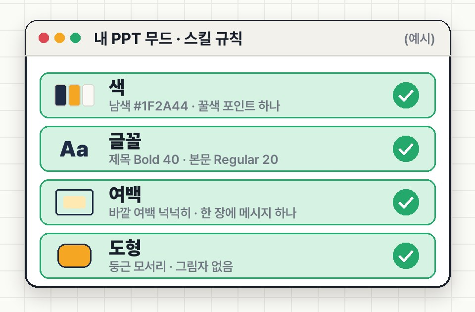

"남색 바탕으로, 여백 넉넉하게, 제목은 굵게…" AI한테 PPT를 시킬 때마다 붙이던 긴 설명을 Claude 스킬로 한 번 저장해 두면, 다음부턴 / + 스킬 이름 + 요청 한 줄이면 돼요. 그동안 만든 내 PPT에서 색 · 글꼴 · 여백 규칙을 뽑아 담는 방법이에요.
준비만드는 법 3단계슬래시로 꺼내 쓰기막혔을 때
01준비
Claude 계정(브라우저 claude.ai 기준). 스킬은 무료 · Pro · Max · Team 요금제에서 쓸 수 있어요.
설정 → 기능(Capabilities)에서 '파일 만들기 · 편집'(예전 이름: 코드 실행 및 파일 생성)을 켜 두세요. 꺼져 있으면 스킬이 안 돌아요.
그동안 만든 내 PPT 3~10개를 폴더 하나에 모아 두세요. 회사 기밀이 담긴 자료는 빼고, 디자인이 잘 드러나는 것으로 골라요.
02만드는 법 3단계
1
내 PPT를 프로젝트에 올리기
claude.ai 왼쪽 메뉴 → 프로젝트 → 새 프로젝트(예: 내 PPT 무드) → 파일 추가
⚠️ 프로젝트에 올릴 수 있는 용량에는 한도가 있어요. 너무 크면 장수가 적은 PPT 위주로 골라요.
2
요청문 한 줄로 스킬 만들기
프로젝트 안에서 새 대화를 열고 아래 요청문을 그대로 붙여 넣어요. [ ] 칸만 바꿔요.

이해를 돕기 위한 예시 화면(가상 브랜드 허니 뷰티)
스킬 만드는 요청문
이 프로젝트에 올린 PPT들을 모두 열어 보고,
공통으로 쓰인 디자인 규칙을 정리해서 '[내무드]'라는 Claude 스킬로 만들어 줘.
정리할 것
- 색: 배경 · 제목 · 강조색 HEX 코드
- 글꼴: 제목 · 본문 글꼴과 크기
- 여백 · 배치: 바깥 여백, 한 장에 넣는 요소 수
- 도형 · 아이콘: 모서리, 선 굵기, 그림자 여부
- 차트 · 표 스타일
스킬 설명 첫 줄에는 "PPT를 만들 때 이 무드로 만든다"라고 적어 줘.
결과는 바로 저장할 수 있는 스킬 파일로 줘.
설명 첫 줄이 중요해요. Claude는 스킬 이름 · 설명을 보고 언제 꺼낼지 정해요. claude.ai는 설명이 200자까지라 짧게 써요.
3
스킬로 저장하기
답변에 스킬 파일이 나오면 저장해요.
파일 옆에 저장(스킬에 추가) 버튼이 보이면 눌러요.
버튼이 없으면 파일(ZIP)을 내려받아 사용자 지정(Customize) → 스킬 → + → 스킬 만들기 → 스킬 올리기로 올려요.